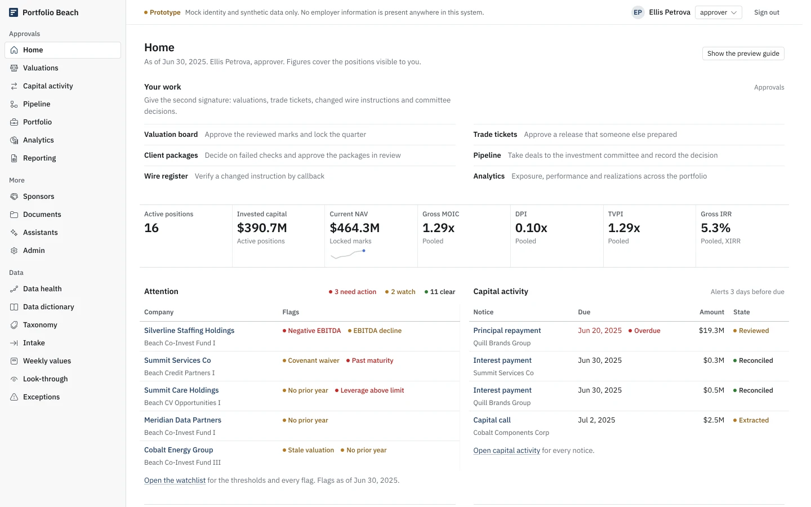
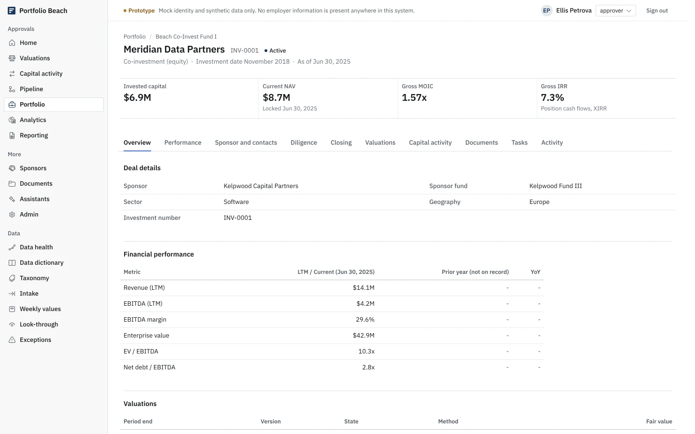
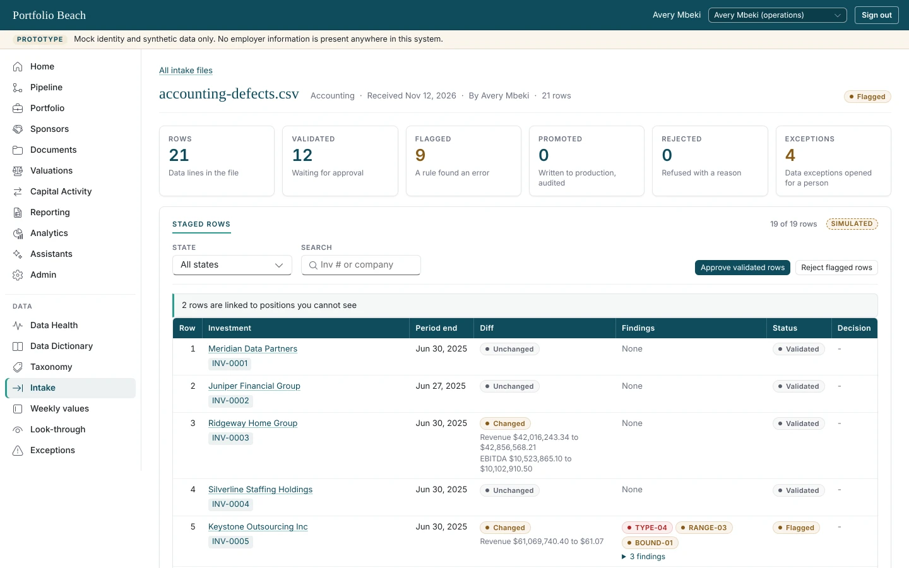
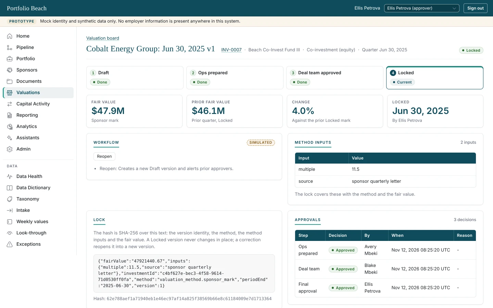
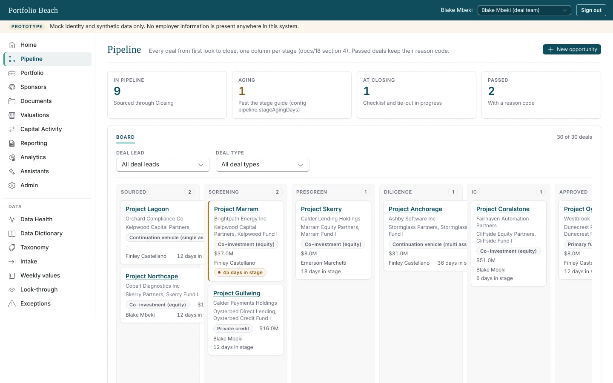

One connected workspace for a private equity LP and co-investment team.
Prototype, synthetic data only
What it is
Portfolio Beach is a prototype of a portfolio management platform for an institutional
team that commits to sponsor funds, co-invests alongside them, backs continuation
vehicles and lends through a private credit vehicle, on behalf of several clients.
It keeps the deal, the documents, the numbers and the approvals in one place. A position
is stored once and read by everyone who is allowed to see it.
It is not a general ledger, an investor onboarding system or a fund administrator. A
separate fund accounting system stays the official book of record.
What it brings together
Work that is usually scattered across spreadsheets, email, accounting system exports,
document folders, look-through extracts, task lists and dashboards:
Pipeline, diligence and closings
Documents, tagged and read into reviewed figures
Quarterly monitoring of every position
Valuations with approvals and a lock
Capital calls, trade tickets and the wire register
Analytics over approved records

The home page, signed in as an approver: pooled figures, what needs attention and capital
activity. Every figure is synthetic.
Prototype. Synthetic data only: no real firm, fund, company or person appears.1 / 3
Portfolio BeachProduct overview
Who uses it
Deal team
Works the pipeline and diligence, and gives the first approval on a valuation.
Operations
Runs intake, valuations, closings and capital activity.
Approvers
Record committee decisions, lock valuations and approve trade tickets.
Investor relations
Reads the look-through for the clients they are entitled to.
Auditors
Read-only access to the records and the audit trail.
How the work flows
1
Pipeline
Sourced through diligence and committee, with a gate at each step.
2
Closing
One close date, a checklist, allocations that tie. Then a position.
3
Monitoring
Sponsor reports are indexed, read and reviewed each quarter.
4
Valuation
Prepared, approved, locked. The preparer never approves.
5
Capital activity
From notice to trade ticket, funding and a cash flow.
6
Analytics
Exposure, performance, value creation, credit and client views.
What is built today

Portfolio and one-pager
Every position in one grid with filters, search and a CSV export. One page per deal:
invested capital, NAV, gross MOIC and gross IRR, with deal details and financial
performance.

Intake and exceptions
Accounting exports, weekly values, look-through extracts and workbooks are staged,
compared with the record and checked by rules. Rows are promoted only on approval.
Document hub and extraction
Documents are indexed and tagged. Extraction reads quarterly financials into values
with a page and a quote, for a reviewer to approve. The prototype runs a mock model.
Monitoring board
For each active position: whether the quarterly report is expected, received, late or
missing, the state of its extraction run, and whether the figures are approved.
Prototype. Synthetic data only: no real firm, fund, company or person appears.2 / 3
Portfolio BeachProduct overview

Valuations, approvals and the lock
One valuation per position per period, from Draft to Locked. The lock is a hash over
the version, the method, its inputs and the fair value. Reports read Locked valuations
only.
Capital calls and the wire register
Notices run from review to a trade ticket, funding and reconciliation. A changed wire
instruction holds the release until a second person verifies it by callback.

Pipeline, diligence, IC and closing
A stage board from first look to close. Required diligence tasks gate the investment
committee. The closing has one close date, a checklist and allocations that must tie
to the commitment exactly.
Analytics
Exposure by sector, geography, deal type, vehicle, sponsor and vintage. Pooled
performance, value creation by driver, entry metrics, the credit book, realizations
and the client look-through.
On the roadmap: planned, not built
Planned
Reporting packages
A report quality gate, then weekly and client reports from templates.
Planned
Relationship intelligence
Activity capture from mail and calendar, with scores and warm paths.
Planned
The assistant
Answers from records the user can already open, and cites them.
Planned
Benchmarking
Public market equivalents and quartiles against benchmark series.
Planned
Forecasting and exits
Liquidity forecasting with tunable parameters, and exit analytics.
Planned
Data access
A documented read interface, a spreadsheet add-in and a warehouse extract.
See it work
The Portfolio Beach site carries an interactive demo that runs in the browser on synthetic
data, short demo videos, and two more brochures.
Prototype. Synthetic data only: no real firm, fund, company or person appears.3 / 3